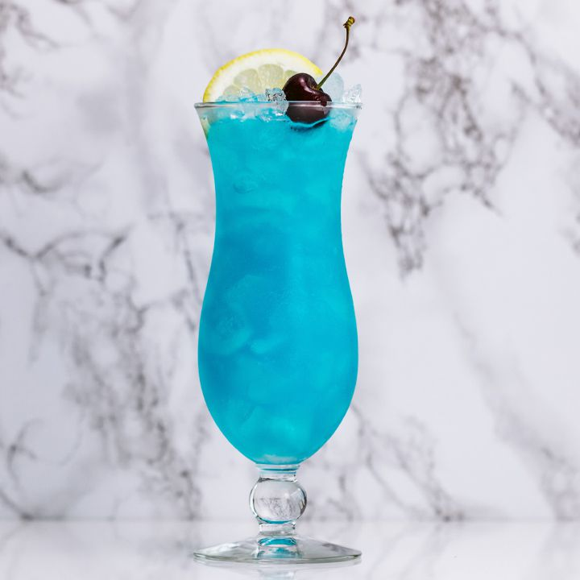

A strikingly vivid sky-blue mocktail with tropical citrus notes. Equal parts show-stopping and delicious — perfect for parties!
The Blue Lagoon gets its iconic colour from blue curacao syrup — a sweet orange-flavoured cordial named after the island of Curaçao. Combined with lemonade and a squeeze of lime, it delivers a tropical citrus punch that tastes as spectacular as it looks. First served in the 1970s, it has since become a staple on menus around the world. Its brilliant blue hue and citrusy sweetness make it a showstopper at any gathering.
Chill your serving glass in the freezer for 5 minutes for the best experience.
Fill the chilled glass generously with ice cubes.
Pour the blue curacao syrup over the ice.
Add fresh lemon or lime juice for a bright citrus kick.
Top up with chilled lemonade or soda water and stir gently to combine.
Garnish with a lemon slice and a maraschino cherry. Serve immediately.